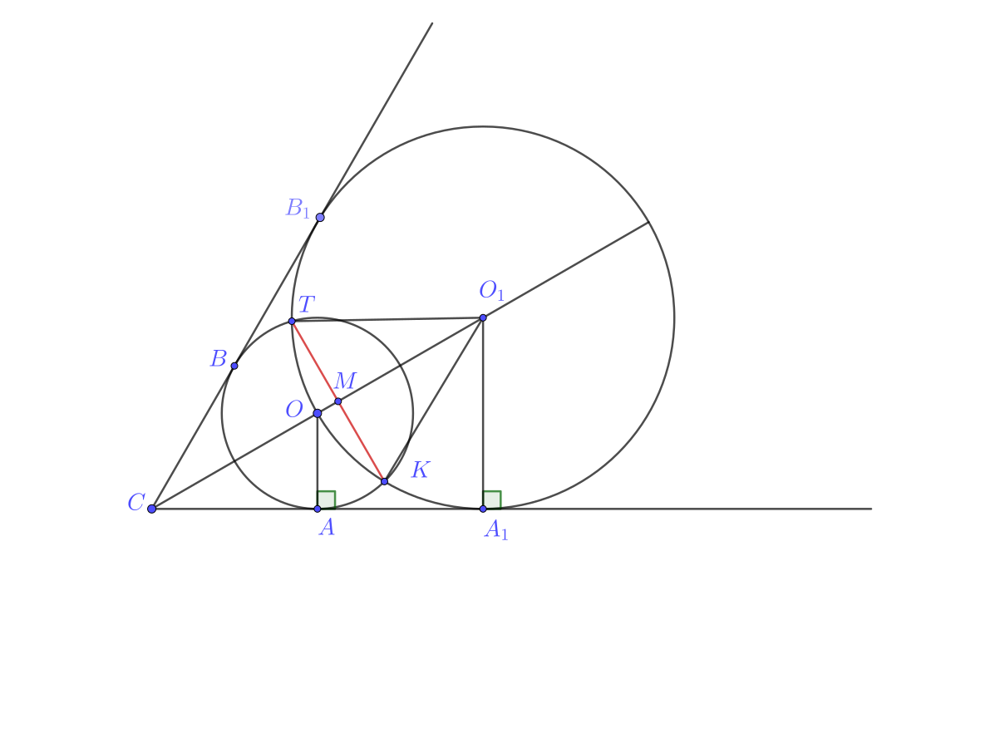

Окружность с центром O вписана в угол, равный 60°. Окружность большего радиуса с центром O1 также вписана в этот угол и проходит через точку
а) Докажите, что радиус второй окружности вдвое больше радиуса первой.
б) Найдите длину общей хорды этих окружностей, если известно, что радиус первой окружности равен \(2\sqrt{3}\)

а) Обозначим радиус первой окружности за \(r = |OA|\), а второй за \(R = |O_{1}A_{1}|\). Т.к. окружности касаются стороон угла, то их центры равноудалены от сторон угла,
а значит лежат на биссектрисе угла. Если \([CO_{1})\) - биссектриса исходного угла, тогда \(\widehat{OCA}=30^\circ\). Напротив угла в \(30^\circ\)
лежит катит в 2 раза корочке гипотинузы, значит \(|CO| = 2|OA| = 2r\). Аналогично \(|CO_{1}| = 2|O_{1}A_{1}| = 2R\).
Получаем:
\(2R = 2|O_{1}A_{1}| = |CO_{1}| = |CO| + |OO_{1}| = 2r + R\), значит \(R = 2r\).
ч.т.д.
б) Пользуясь доказанным в предыдущем пункте фактом, можем сказать, что \(R = 4\sqrt{3}\). Зная, что \(|OO_{1}| = |O_{1}K| = R = 4\sqrt{3}\)
и \(|OK| = r = 2\sqrt{3}\), запишим теорему косинусов для треугольника \(KOO_{1}\).
$$
(2\sqrt{3})^2 = (4\sqrt{3})^2 + (4\sqrt{3})^2 - 2(4\sqrt{3})^2\cos(\widehat{OO_{1}K}) \iff \\
12 = 96 - 96\cos(\widehat{OO_{1}K}) \iff
\cos(\widehat{OO_{1}K}) = \frac{7}{8} \iff
\sin(\widehat{OO_{1}K}) = \frac{\sqrt{15}}{8}
$$
Т.к. \([TK]\) - общая хорда, то она перпендикулярна линии центров \((OO_{1})\), тогда треугольник \(KMO_{1}\) прямоугольный.
Получаем:
\(|MK| = |O_{1}K|\sin(\widehat{OO_{1}K}) = \frac{3\sqrt{5}}{2}\)
Поскольку в треугольнике \(TKO_{1}\) две стороны - радиусы окружности, он равнобедренный, а значит \([O_{1}M]\) - высота и медиана
в треугольнике \(KO_{1}T\),
значит \(|KT| = 2|MK| = 3\sqrt{5}\)
Ответ: \(3\sqrt{5}\)